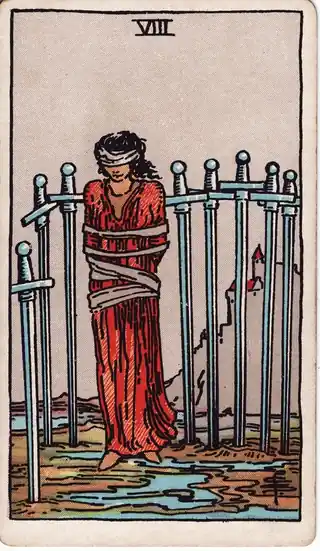

READING
決断できなくて疲れたとき、まず「休む」という選択肢を持つ
（更新 ） ・ DECIDE. 編集部

決めなきゃいけないことがあるのに、もう考える気力が残っていない。スマホを開いては閉じ、同じことをぐるぐる考えて、夜だけが過ぎていく。疲れているのは体ではなく、「決められない自分」に対してです。
先に言っておくと、このページのゴールは「うまく決める方法」を身につけることではありません。ゴールは、疲れた状態のまま無理に答えを出さないことです。今日のあなたに必要なのは、もう一押しの頑張りではなく、回復のための区切りかもしれません。
この記事では、決断できなくて疲れているときに、一度立ち止まって回復するための考え方を紹介します。カードは未来を当てるためではなく、自分の状態を別の角度から眺めるための道具として扱います。
決断できないのは、意志が弱いからではない
決められない状態が続くと、「自分は優柔不断だ」「意志が弱い」と責めたくなります。でも多くの場合、原因は性格ではありません。
- 選択肢それぞれに、本当に大事なものが含まれている
- 情報を集めるほど、判断材料が増えて整理しきれなくなる
- 仕事や生活の中で、小さな判断を一日中くり返して疲れている
人が一日に下せる判断の質には限りがある、とよく言われます。大きな決断を抱えている時期ほど、日常の小さな判断でも消耗しやすくなります。決められないのは、真剣に考え続けてきた結果でもあるのです。考えすぎの構造そのものについては、決められない・優柔不断なときの考え方でも扱っています。
膠着している状態を、まず認める

ソードの2は、目隠しをした人物が二本の剣を胸の前で交差させ、じっと均衡を保っている姿で描かれます。キーワードは「決断の保留」「均衡」「膠着」。
このカードの視点を借りると、今の自分をこう言い換えられます。
私は今、どちらにも傾けない状態でバランスを取っている。それ自体が、かなりの力を使っている。
決められない状態は、何もしていないように見えて、実は両方の可能性を抱え続けるという重労働です。疲れて当然だと認めるだけで、少し肩の力が抜けることがあります。
「動けない」と感じる思い込みに気づく

ソードの8は、縛られて剣に囲まれた人物の姿です。キーワードは「束縛」「思い込み」「無力感」。ただ、よく見ると足元は自由で、剣の囲いにも隙間があります。
決断に疲れているとき、私たちは次のような思い込みに縛られがちです。
- 今すぐ決めなければいけない
- 一度決めたら、二度とやり直せない
- 正解は一つしかなく、それを外したら終わりだ
本当にそうでしょうか。期限が実際にあるのか、やり直しは本当に効かないのか、一つずつ確かめてみると、思っていたより選択の余地があることに気づくかもしれません。
休むことは「逃げ」ではなく、判断の準備

そこで今回の中心となるのがソードの4です。このカードは、静かな場所で横たわり、体を休めている人物の姿で描かれます。キーワードは「休息」「回復」「静養」。
ソードの4が教えてくれるのは、休むこと自体が一つの積極的な選択だということです。疲れた頭で出した結論は、焦りや不安に引っ張られやすくなります。一度離れてから戻ってくると、同じ選択肢でも違って見えることがよくあります。
休むと決めるときは、次のように「期限つき」にすると罪悪感が減ります。
- 「今週末までは、この件について考えない」と決める
- その間は、睡眠・食事・散歩など、体を整えることを優先する
- 再開する日に、何から考えるかだけメモしておく
休むと決めたことを、記録に残す
「休む」と決めたら、その決断自体を記録に残しておいてください。「いつまで考えないか」「再開日に何から考えるか」。書いておくと、休んでいる間に「やっぱり考えなきゃ」と頭の中で反芻する回数が減ります。考える材料が外に置いてある安心感が、休みを本物の休みにします。
再開の日も、記録が効きます。休む前の自分が何に傾いていて、何を確かめたいと言っていたか。そのメモから始めれば、ゼロからではなく、続きから考えられます。決断の記録は、決めるためだけのものではありません。休む自分の背中を押すためにも使えます。
休んだあとに、小さく再開する
休んだあとは、いきなり大きな結論を出そうとしなくてかまいません。まずは次のような小さな問いから始めてみてください。
- 今の時点で、少しでも気持ちが傾いているのはどちらか
- その選択肢を選んだ自分を想像して、ほっとするか、ざわつくか
- 決める前に、あと一つだけ確かめたいことは何か
答えは「まだわからない」でも大丈夫です。わからないことがはっきりするだけでも、迷いは前に進んでいます。
最後に
決断の疲れは、頭の中だけで抱えているほど大きくなります。まず休む。それから、記録を手に、また考える。疲れた自分を責める材料は、もう十分に揃っています。足りないのは、回復のための許可のほうです。今日はその許可を、自分に出してあげてください。